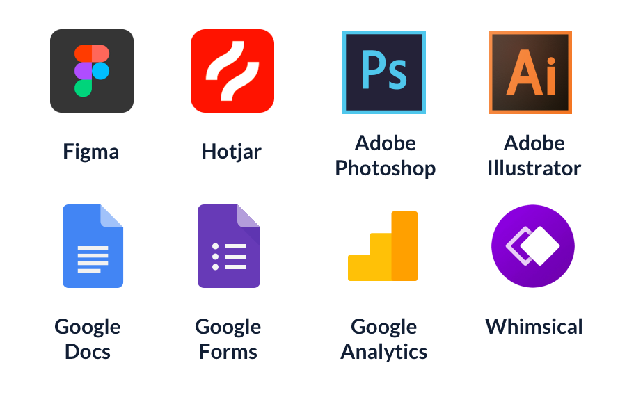

Project Overview:
The software creates high–quality haptic feedback from audio or video frames on the fly without any code.
Feel what you see, physically feel the motion in anything you watch, recorded or live.
Simple workflow helps to connect the device to any video streaming platform and set up the supported device as the user feels and likes.
Feelme AI is a real-time motion tracking system that analyses motion in ANY online video content and automatically controls users device follow the action as you watch it.
What does the project solve:
A lack of interactive content available online. Interactive content was created manually by adding so-called subtitles to the video. The number of such videos was also limited.
Users are often deterred from purchasing an interactive pleasure product simply due to the lack of variety of free content OR the high cost of a monthly premium on adult sites that provide interactive content. FeelMe was developed to turn an entire website’s content to interactive content, simply by subscribing to one of our packages.
Users are often deterred from purchasing an interactive pleasure product simply due to the lack of variety of free content OR the high cost of a monthly premium on adult sites that provide interactive content. FeelMe was developed to turn an entire website’s content to interactive content, simply by subscribing to one of our packages.
Technical Solution:
The solution was found in a process of training of Neural network. Neural network is a function that can predict result based on incoming data.
Network consists of network architecture (set of layers) and weights.
The architecture is defined by an ML Engineer. The weights are defined using process called training.
Our networks receive frames from the videos and produce subtitles (in FunScript ).
In order to train the network, we need plenty of videos with subtitles. Training is a process of finding optimal weights which produce the result as close as possible to the existing subtitles.
Tools Used:
My Responsibility:
- User Interviews
- UX Strategy
- User Flow
- Wireframes
- Prototyping
- User testing
- Visual Design
- Usability Testing
Feelme AI Team:
- 6 Developers (Full Stack developers + Front End developers)
- PO
- Machine Learning Engineer
- Researcher from the external partners company who are manufacturing devices
- Communication Manager
- 2 QA
Design process:


Business goals:
The project has a monetization model via monthly subscription plans that covers varied target user groups and users needs, generate recurring revenue. One of the challenges we faced was to align the price with value since the project is new in the market. Our development team has worked with over 10 customers over the past 10 years to make their Bluetooth-enabled devices interactive. The purpose of this project is to increase the conversion of sales of our partners' devices as afiliate partners.Potential Risks:
- No solution found for the "no visible action" scenes
- Accuracy is not meeting expectations
Timelines:
The first phase of the project (MVP) took 12 weeks and is under development and improvement.
Project architecture:
This software is available to customers in the form of a Google Chrome Extension and interface on the platform and the purpose of this technology is to turn any type of video content interactive.
Target groups:
Video game users
- Type of games: paintball, boxing, gun shooting, car racing.
- Mostly men, less often women.
- Ages of 20 and 49.
- Average level of technical knowledge.

Viewers of interactive content
- Type of interactive content: adult.
- Only men.
- Ages of 25 and 53.
- Average level of technical knowledge.
Technical Discussions:
At the design stage of a project, it is essential to know all the technical limitations. Since this is not a standard project (like messenger or note app) a good experience depends on how the technical capabilities of the project are transferred to a good UX.Technical limitations lead to problems that can be possibly solved by good UX such as:
- "No visible action" scenes can cause frustration of the users because of the way they experience adult devices.
- High expectations on accuracy can lower the loyalty to the brand as the estimated neural network accuracy is 75-80%.
Benchmarking:
I have spend some time on the research and the goal was to find projects that exist on the market and have the same or close functionality. And at the moment there is no technology that would allow making video content interactive online.Information architecture:
I started with implementing the basic principle of hierarchy with developing an information sequence.
I combine all the information and actions that are going to be embed into Feelme AI site.
From there, I build a design hierarchy that links my pages in a consistent and logical way.
Hierarchy is another key UX design principle that is often overlooked. At its simplest level,
this approach means thinking through all the features and information that Feelme AI (and also mobile App)
will contain. I see it as an important part to use this approach early in the design phase.
This will allow potential users to navigate Feelme AI more easily and find what they are looking for.

User Flow:
I created a flow using Whimsical to illustrate how the user will navigate through the project. I covered all the dependencies to make the customer journey smooth and user friendly.Low Fidelity Wireframes and Prototype:
User Test:
I wanted to get users' feedback not only regarding the user experience on the Feelme AI website but also users' feedback regarding the accuracy
of the Neural Network and their expectations regarding the movements of the connected device. It's important to remember that the most beautiful design in the world is worthless if your customers can't use it.
I prepared task scenarios to cover the objectives defined before.
Main questions that I had at this stage are:
- How easy was it to download and set up the FeelMe Video Watcher extension?
- What type of content/media did you watch?
- How would you rate the general experience of using FeelMe AI
- What did you like the most about using FeelMe AI?
- What did you like the least about using FeelMe AI?
- How accurate was FeelMe AI (syncing Keon with the video movement) overall?
- Did the functionalities - intensity, pause button, and ambient movement - add value to your experience? Please list the ones that added value.
- How frequently would you use FeelMe AI?
- What functionalities would make the experience better?
Feelme AI UI:

Surveys & Interviews:
To validate designs and decisions made for Feelme in collaboration with our external partners, I selected 150 users who have purchased devices in the past few months. Based on the results of the survey, changes were made to the project settings (such as server selection, limit outgoing bandwidth).